PHẦN 1: HỆ THỐNG ĐƠN GIẢN HÓA, TÍNH ĐỒNG NHẤT & MẶT PHẲNG ĐÁNH BÓNG
— Victor Tantalo (USA Tennis Course)
Lời Dẫn Nhập: Câu Chuyện Kỳ Diệu Của Victor Tantalo
Victor Tantalo là một trong những hiện tượng truyền cảm hứng phi thường nhất trong lịch sử quần vợt Mỹ. Xuất thân là một chuyên gia tư vấn quản trị kinh doanh không có nền tảng năng khiếu thể thao, ông bắt đầu học tennis ở tuổi 50. Thay vì học vẹt theo các giáo án truyền thống phân mảnh, Tantalo đã áp dụng phương pháp phân tích hệ thống công nghiệp: chia nhỏ trò chơi, tìm ra các điểm tương đồng cốt lõi và tiêu chuẩn hóa quy trình vận động.
Chỉ 5 năm sau, ở tuổi 55, Victor Tantalo chính thức thi đấu và trở thành huấn luyện viên chuyên nghiệp. Ông nhanh chóng trở thành một trong những chuyên gia huấn luyện bận rộn nhất nước Mỹ, xuất hiện trên các chương trình truyền hình quốc gia như Eyewitness News, trang bìa của Hartford Courant Sunday Magazine, và đào tạo hàng nghìn học viên từ khắp nơi trên thế giới. Cuốn sách USA Tennis Course: 500 Visual Ways to Better Tennis (với hơn 500 hình vẽ minh họa trực quan sinh động của họa sĩ Anne Brown Tantalo) chính là kết tinh của phương pháp đột phá này.
Bài 1: Đơn Giản Hóa Trò Chơi & Khái Niệm "Tính Đồng Nhất" (The Sameness)
Ảo tưởng lớn nhất khiến người chơi bối rối và tiến bộ chậm chạp là niềm tin rằng mỗi cú đánh trong quần vợt (Forehand, Backhand, Volley, Serve, Smash) đòi hỏi những bộ kỹ năng và suy nghĩ hoàn toàn khác nhau. Tantalo chứng minh rằng mọi cú đánh đều chia sẻ chính xác 10 bước vận động giống hệt nhau:
| Bước | Hành Động Nhất Quán Cho Mọi Cú Đánh | Ý Nghĩa Vận Động Học |
|---|---|---|
| 1 | Phán đoán hướng bay của quả bóng đang tới | Định hướng không gian ngay khi bóng rời mặt vợt đối phương. |
| 2 | Chuẩn bị vợt sớm (Early Preparation) | Mở vợt ra sau đồng thời với bước chân đầu tiên. |
| 3 | Ước lượng tốc độ và độ xoáy của bóng | Căn chỉnh cự ly di chuyển thích ứng với điểm nảy. |
| 4 | Di chuyển cơ thể hướng về phía quả bóng | Sử dụng các bước chân linh hoạt để tiếp cận bóng. |
| 5 | Hình dung vùng tiếp xúc bóng trước thân người | Khóa mục tiêu thị giác tại điểm va chạm lý tưởng. |
| 6 | Lựa chọn loại cú đánh cần thực hiện | Quyết định đánh bóng sâu, cắt bóng, hay tấn công góc. |
| 7 | Xác định vị trí mục tiêu định đưa bóng tới | Nhắm vào một điểm cụ thể trên sân đối phương. |
| 8 | Lựa chọn kiểu đòn đánh phù hợp | Đánh bóng nảy (Groundstroke), Volley hay Bỏ nhỏ. |
| 9 | Căn thời gian để vợt gặp bóng tại vùng tiếp xúc | Đồng bộ đà vung vợt với quỹ đạo bay của bóng. |
| 10 | Nhắm bóng và kết thúc đòn đánh xuyên suốt | Dẫn vợt qua bóng hướng về mục tiêu định sẵn. |
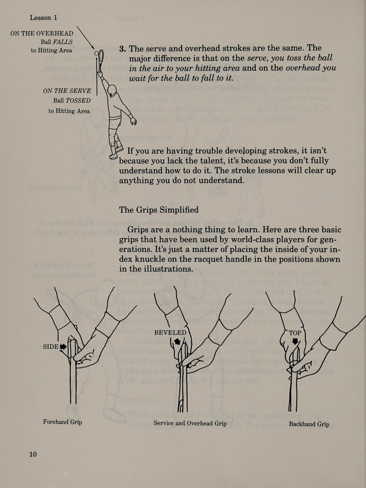
Khi nhận ra sự thật này, gánh nặng tâm lý của người chơi lập tức được cởi bỏ. Bạn không phải học hàng chục môn thể thao riêng lẻ; bạn chỉ cần rèn luyện thuần thục một quy trình 10 bước duy nhất và áp dụng nó cho mọi tình huống trên sân.
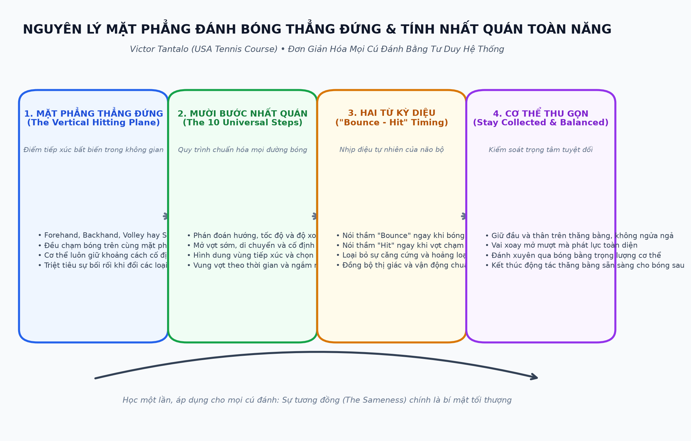
Bài 2: Mặt Phẳng Đánh Bóng Thẳng Đứng Bất Biến (The Vertical Hitting Plane)
Một phát hiện cách mạng khác của Victor Tantalo là khái niệm về mặt phẳng đánh bóng thẳng đứng. Dù bạn thực hiện cú thuận tay, trái tay, volley hay đập bóng trên đầu, điểm tiếp xúc bóng lý tưởng luôn nằm trên một mặt phẳng phẳng đứng cắt ngang phía trước cơ thể bạn từ 30 đến 45 centimet.
Người chơi nghiệp dư thường nghĩ rằng khi lên lưới hoặc tấn công bóng ngắn, họ phải đánh bóng xa hơn về phía trước. Điều đó hoàn toàn sai lầm. Bạn di chuyển vào sân để đón bóng sớm hơn trong thời gian, nhưng mối quan hệ không gian giữa thân người bạn và quả bóng tại thời điểm chạm vợt vẫn phải giữ nguyên vẹn trên mặt phẳng thẳng đứng quen thuộc đó.
Bài 3 - 6: Hệ Thống Học USA & Triệt Tiêu 5 Lỗi Tai Hại
Tantalo xây dựng hệ thống huấn luyện độc quyền mang tên Hệ Thống USA:
U — Understand (Thấu Hiểu)
Hiểu rõ nguyên lý vật lý và hình học sân bãi đằng sau mỗi cú đánh. Không bao giờ mù quáng bắt chước động tác bên ngoài mà không hiểu tại sao phải làm như vậy.
S — Simplify (Đơn Giản Hóa)
Lược bỏ toàn bộ các chuyển động thừa thãi. Cắt ngắn đà vung vợt rườm rà, tập trung tuyệt đối vào sự ổn định của mặt vợt tại thời điểm va chạm.
A — Apply (Ứng Dụng Thực Chiến)
Lập trình bộ nhớ cơ bắp thông qua các bài tập lặp lại có chủ đích, chuyển hóa kiến thức lý thuyết thành phản xạ vô điều kiện trong thi đấu.
Triệt Tiêu 5 Lỗi Tai Hại Cực Lớn (The Five Errors of Great Consequence)
- Lỗi đánh bóng vào lưới: Đây là sai lầm ngu ngốc và tốn kém nhất trong quần vợt. Khi bóng chạm lưới, cơ hội sống sót của điểm số là đúng bằng 0. Một quả bóng bay dài có thể rơi trúng vạch hoặc khiến đối thủ lúng túng, nhưng bóng rúc lưới là món quà dâng trọn cho đối phương.
- Lỗi nhắm sát vạch kẻ (Aiming for Lines): Không có bất kỳ tay vợt nào trên thế giới — kể cả các huyền thoại số 1 — đủ hoàn hảo để đánh bóng liếm vạch liên tục. Hãy luôn đặt mục tiêu cách vạch biên và baseline tối thiểu 1 mét vào phía trong sân.
- Lỗi bẻ gãy khớp cổ tay tại thời điểm chạm bóng: Cổ tay lỏng lẻo làm biến dạng góc mặt vợt ở tốc độ cao, khiến bóng bay tán loạn không thể kiểm soát.
- Lỗi mất thăng bằng cơ thể (Overhitting): Vung vợt vượt quá khả năng kiểm soát trọng tâm, khiến thân người ngửa ra sau hoặc loạng choạng sau cú đánh.
- Lỗi giao bóng kép (Double Fault): Tặng điểm trắng cho đối phương mà không buộc họ phải đổ một giọt mồ hôi nào.
PHẦN 2: CĂN THỜI GIAN, KIỂM SOÁT THÂN THỂ & DI CHUYỂN CHIẾN THUẬT
— Victor Tantalo
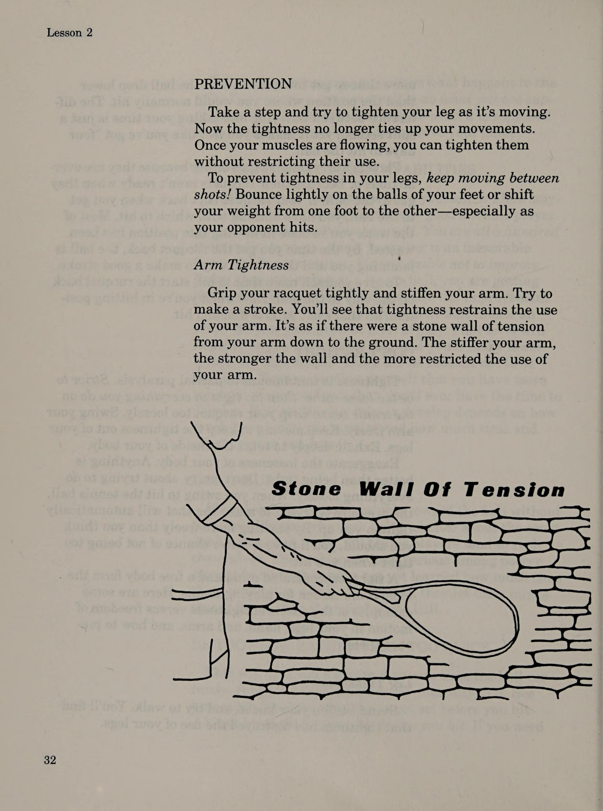
Bài 7: Căn Thời Gian Đánh Bóng & Hai Từ Kỳ Diệu (The Magic Words "Bounce - Hit")
Thời điểm tiếp xúc (Timing) là trái tim của môn quần vợt. Bạn có thể có kỹ thuật vung vợt đẹp mắt, nhưng nếu bạn đến bóng quá sớm một phần mười giây hoặc quá muộn một phần mười giây, cú đánh sẽ hoàn toàn biến dạng.
Để lập trình lại sự đồng bộ giữa mắt và tay một cách tự nhiên nhất, Victor Tantalo đưa ra phương pháp khẩu lệnh hai từ:
- Nói thầm "Bounce" (Nảy): Ngay khoảnh khắc quả bóng của đối phương chạm xuống mặt sân bên phần sân của bạn, hãy nói thầm từ "Bounce" trong tâm trí. Mệnh lệnh này lập tức kích hoạt đôi chân bước vào vị trí trụ và khóa tầm nhìn vào độ nảy của bóng.
- Nói thầm "Hit" (Đánh): Ngay khi mặt lưới chạm vào quả bóng tại mặt phẳng tiếp xúc thẳng đứng trước người, hãy nói thầm từ "Hit". Mệnh lệnh này đảm bảo bạn hoàn tất cú đánh xuyên suốt mà không chùn tay hay dừng vợt đột ngột.
Phương pháp đơn giản này hoạt động như một máy đếm nhịp nhịp nhàng. Nó xua tan toàn bộ những suy nghĩ lo âu trong đầu người chơi và đưa hệ thần kinh vận động vào trạng thái tự động hóa chuẩn xác 100%.
Bài 8: Cách Vận Hành Cơ Thể & Xoay Khóa Khớp Vai (How to Use Yourself)
Một sai lầm rất lớn của người chơi tự do là để cơ thể bị "bung tỏa" (Uncollected) khi đánh bóng: đầu lắc lư, ngực ưỡn ra sau, và hai chân bay lơ lửng mất phương hướng. Victor Tantalo nhấn mạnh nguyên tắc "Thu Gọn Thân Thể" (Stay Collected):
Giữ Vững Trục Cơ Thể Trung Tâm
Cột sống và đầu phải duy trì vị trí thăng bằng thẳng đứng trong suốt quá trình vung vợt. Không bao giờ ngửa cổ ra sau để nhìn bóng bay đi đâu trước khi cú đánh hoàn tất.
Khớp Vai Như Một Trục Bản Lề
Sức mạnh không đến từ việc dùng sức của bắp tay kéo vợt. Hãy khóa cánh tay thành một đòn bẩy vững chắc và xoay toàn bộ khớp vai quanh trục xương sống để truyền trọn vẹn trọng lượng cơ thể vào cú đánh.
Đưa Toàn Bộ Cơ Thể Vào Cú Đánh
Bước chân về phía trước khi tiếp xúc bóng, để trọng lượng cơ thể chuyển dịch từ chân sau sang chân trước theo một đường thẳng hướng về phía mục tiêu.
Bài 9: Di Chuyển Bao Quát Sân Bãi Đơn Giản Hóa (Court Coverage)
Nhiều người chơi kiệt sức trên sân vì họ chạy quá nhiều nhưng lại di chuyển không đúng thời điểm. Tantalo hướng dẫn cách bao quát sân bãi thông minh:
| Tình Huống Trên Sân | Cách Di Chuyển Của Người Mới | Phương Pháp Chuẩn Của Victor Tantalo |
|---|---|---|
| Bóng bay sang hai bên góc sân | Cắm đầu chạy đuổi theo bóng bằng các bước dài nặng nề, dừng lại gấp làm mất đà. | Bật bước xoay hông (Pivot) ngay nhịp đầu tiên, mở vợt sẵn trên đường chạy, dùng bước trượt ngang để giữ mắt luôn hướng về bóng. |
| Xử lý các pha bóng khi đang chạy (Shots on the run) | Cố gắng vung hết sức để ghi điểm khi cơ thể đang lao đi với tốc độ cao. | Hãm đà bằng chân ngoài, thực hiện cú đánh với biên độ an toàn cao vào giữa sân đối phương để có đủ thời gian phục hồi vị trí. |
| Bóng rơi ngắn phía trước mặt sân | Chạy thẳng tới bóng, cúi gập lưng và xúc bóng bằng cổ tay. | Hạ thấp toàn bộ cơ thể bằng cách uốn cong hai đầu gối, giữ đầu vợt ổn định và bước xuyên qua quả bóng. |
Bài 10: Chiến Thuật Thực Chiến & Bí Ẩn "Tại Sao Tập Rất Tốt Nhưng Đấu Lại Hỏng?"
Đây là câu hỏi day dứt nhất của hàng triệu tay vợt phong trào: "Tại sao trong các buổi tập tôi đánh bóng rất mượt mà và chuẩn xác, nhưng khi bước vào một trận đấu tính điểm chính thức, tôi lại đánh hỏng liên tục những quả bóng dễ nhất?"
Victor Tantalo giải thích rằng trong buổi tập, người huấn luyện hoặc bạn tập luôn đưa bóng vào đúng tầm tay thoải mái của bạn với tốc độ đều đặn. Không có áp lực rủi ro, và bạn không phải suy nghĩ về điểm rơi tiếp theo. Nhưng trong trận đấu:
- Bạn đánh mất nhịp điệu tự nhiên: Nỗi sợ thua trận khiến bạn vội vã vung vợt trước khi cơ thể kịp định hình vị trí thăng bằng.
- Bạn cố gắng làm quá nhiều thứ cùng một lúc: Bạn vừa muốn đánh thật mạnh, vừa muốn đưa bóng sát vạch, vừa lo sợ bị đối thủ bắt bài. Hãy quay trở về với quy tắc vàng của Tantalo: Đưa bóng sâu vào giữa sân, cao hơn mép lưới 1 mét và duy trì nhịp "Bounce - Hit".
- Chiến thuật phòng ngự chủ động: Hãy để đối thủ tự chuốc lấy thất bại bằng sự nôn nóng của họ. Trong 90% các trận đấu nghiệp dư, người giành chiến thắng là người kiên nhẫn đưa thêm một quả bóng an toàn qua lưới.
PHẦN 3: LỐI ĐÁNH TẤN CÔNG, GIAO BÓNG, TRẢ GIAO & CHIẾN THUẬT ĐÁNH ĐÔI
— Victor Tantalo
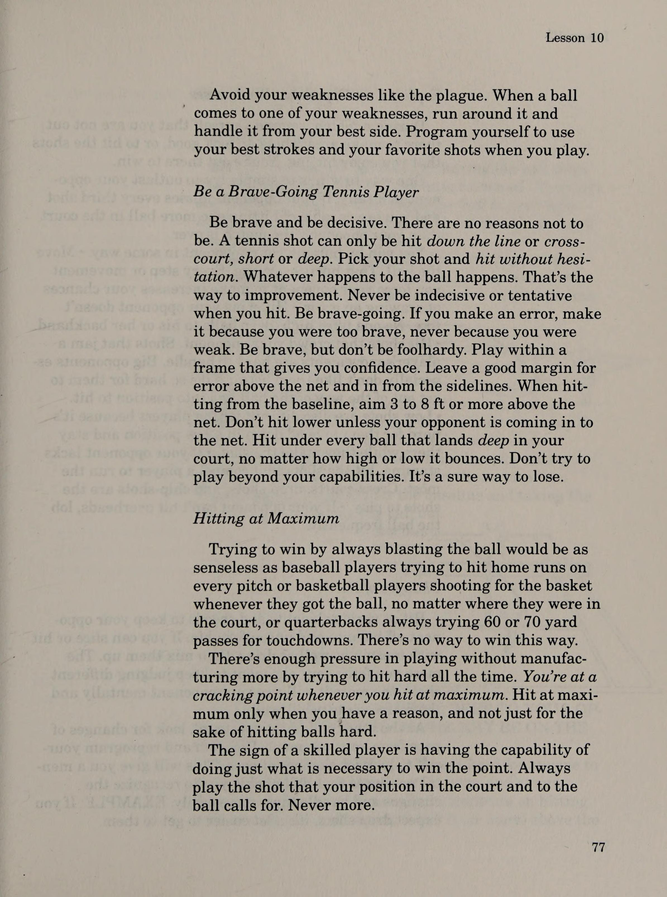
Bài 11 - 12: Lối Đánh Tấn Công & Giao Bóng Lên Lưới (The Attacking & Serve-Volley Game)
Tantalo chia lối đánh tấn công thành ba thành phần cơ học không thể tách rời: cú tiếp cận (Approach Shot), cú bắt lưới (Volley) và cú đập bóng dứt điểm (Overhead Smash).
Cú Đánh Tiếp Cận (Approach Shot)
Chỉ lao lên lưới khi đối thủ đánh bóng ngắn phía trong vạch giao bóng. Đánh bóng sâu về phía góc sân yếu nhất của đối thủ với độ xoáy trượt thấp để tước đi góc phản công của họ.
Bao Quát Lưới (Net Coverage)
Di chuyển về phía góc sân mà bạn vừa đưa bóng sang. Nếu bạn đánh bóng sang góc phải của đối thủ, bạn phải đứng lệch về phía bên phải của lưới khoảng 1 mét để bịt kín góc đánh dọc dây nguy hiểm nhất.
Cú Volley Đầu Tiên (The First Volley)
Đừng cố gắng dứt điểm ăn điểm ngay ở cú volley đầu tiên từ cự ly vạch giao bóng. Hãy bắt một quả volley sâu an toàn để tiến thêm hai bước tới sát lưới và kết liễu ở cú đánh tiếp theo.
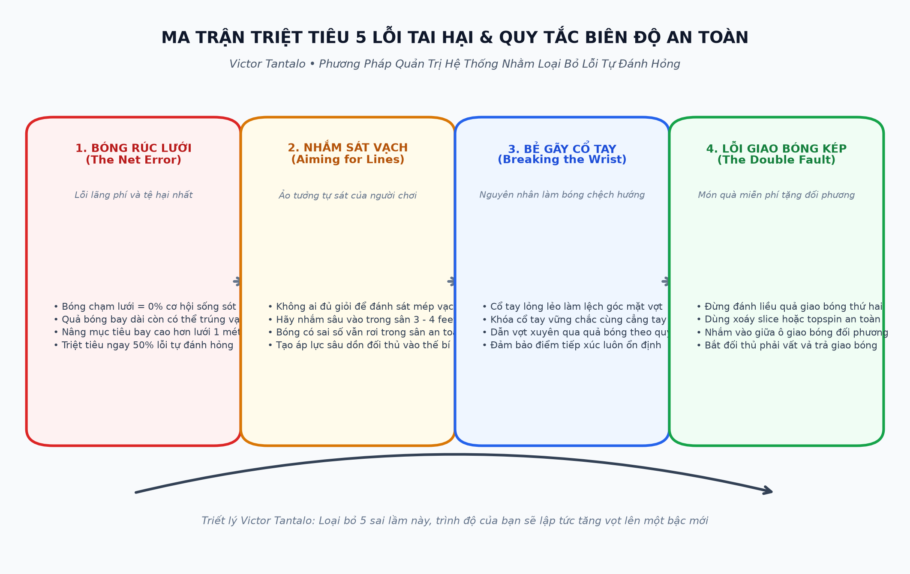
Bài 13 - 14: Chiến Thuật Giao Bóng & Trả Giao Bóng (Serve & Return Tactics)
Victor Tantalo chỉ ra rằng cú giao bóng và trả giao bóng quyết định tới hơn 60% kết quả của mọi pha bóng trong quần vợt hiện đại:
| Yếu Tố Trận Đấu | Sai Lầm Phổ Biến Của Người Chơi | Chiến Lược Tối Ưu Của Victor Tantalo |
|---|---|---|
| Giao bóng vào người (Body Serve) | Chỉ mải mê nhắm vào hai góc chữ T hoặc mang sân, giúp đối thủ dễ dang tay vung hết đà. | Giao bóng xoáy thẳng vào hông hoặc ngực bên phía tay thuận của đối thủ, khiến họ bị trói tay và không thể mở vợt. |
| Giao bóng thứ hai (Second Serve) | Đánh rụt rè bằng cách đẩy nhẹ bóng phẳng, bóng nảy cao vừa tầm cho đối thủ đập bạt. | Vung vợt với tốc độ nhanh nhưng chải nhiều xoáy topspin hoặc slice, đưa bóng bay cao hơn lưới 1 mét và cắm sâu vào ô giao bóng. |
| Đón trả giao bóng (Return of Serve) | Đứng chết trân chờ bóng bay tới rồi vung vợt thật rộng ra phía sau như một cú đánh cuối sân bình thường. | Đón đầu bóng sớm, rút ngắn đà vung vợt ra sau, dùng cú chặn chắc chắn (Block Return) đưa bóng sâu về phía trung lộ đối phương. |
Bài 15 - 16: Lập Trình Giữa Các Điểm Số & Đánh Đôi Đơn Giản Hóa (Doubles Simplified)
Trong 25 giây nghỉ ngơi giữa hai điểm số, người chơi thất bại thường để tâm trí bị chi phối bởi những tiếc nuối về điểm vừa mất. Người chơi thông thái của Tantalo thực hiện quy trình Lập Trình Giữa Các Điểm Số (Programming Between Points):
- Xác định điểm đến của quả bóng tiếp theo: Trước khi bước vào vạch giao bóng hay trả giao bóng, hãy tự nói với bản thân một câu lệnh rõ ràng: "Giao bóng xoáy vào người đối thủ" hoặc "Trả giao bóng sâu vào góc trái".
- Tập trung vào mặt phẳng đánh bóng: Nhắc nhở bản thân gặp bóng trên mặt phẳng thẳng đứng trước người và giữ vững thăng bằng cơ thể.
Chiến Thuật Đánh Đôi Đơn Giản Hóa
Trong đánh đôi, Tantalo nhấn mạnh rằng sự phối hợp nhịp nhàng và đơn giản hóa vị trí quan trọng hơn kỹ thuật cá nhân:
- Nguyên tắc song song: Cả hai người phải cùng nhau chiếm lĩnh lưới hoặc cùng nhau lùi về phòng thủ ở baseline. Tuyệt đối không bao giờ để một người đứng sát lưới trong khi người kia đứng ở giữa sân ngơ ngác.
- Tấn công vào khoảng trống giữa hai đối thủ: Đánh bóng vào khe hở trung tâm khiến đối phương tranh giành nhau hoặc do dự nhường bóng cho nhau.
- Người đứng lưới phải luôn chủ động di chuyển: Đừng bao giờ đứng yên như một pho tượng. Hãy nhấp nhổm bước chia tách (split-step) liên tục để gây áp lực tâm lý và sẵn sàng vồ bóng (poach) khi có cơ hội.
PHẦN 4: ĐÒN ĐÁNH CƠ BẢN, SỬA LỖI TOÀN DIỆN & PHƯƠNG PHÁP TẬP LUYỆN
— Victor Tantalo
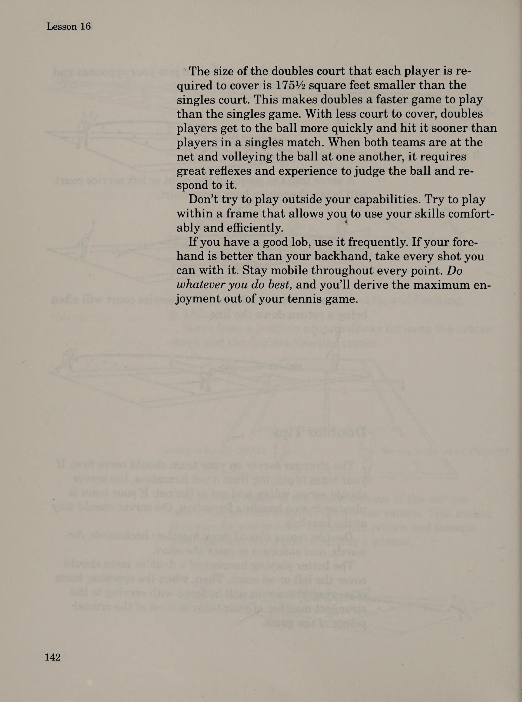
Bài 17 - 18: Cú Thuận Tay, Trái Tay & Cẩm Nang Sửa 13 Lỗi Kinh Điển
Tantalo gộp kỹ thuật cú thuận tay và trái tay vào cùng một bài học vì chúng vận hành trên cùng một nguyên lý: xoay vai sớm, hạ đầu vợt dưới bóng, tiếp xúc bóng tại mặt phẳng thẳng đứng trước người và vung vợt kết thúc trọn vẹn.
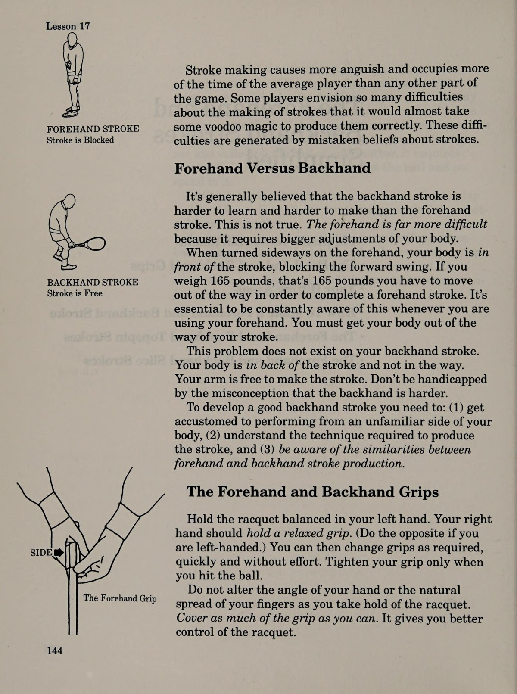
| Lỗi Kỹ Thuật Điển Hình | Nguyên Nhân Cơ Học Cốt Lõi | Giải Pháp Khắc Phục Tức Thì Của Tantalo |
|---|---|---|
| Cánh tay vung vẩy quá đà (Winging on Backswing) | Kéo khuỷu tay quá xa ra phía sau lưng khiến mặt vợt bị biến dạng góc đón bóng. | Giữ khuỷu tay cách xa cơ thể một khoảng thoải mái, dùng toàn bộ vai để đưa vợt ra sau. |
| Không hạ được đầu vợt trước bóng thấp | Chỉ cúi lưng mà không chịu khuỵu gối, đầu vợt nằm cao hơn quỹ đạo bóng bay tới. | Chùng cả hai đầu gối xuống sâu, đưa đầu vợt chúc thấp hơn quả bóng tối thiểu 30cm. |
| Quét vợt ngang người quá sớm | Vội vã xoay thân trên trước khi mặt vợt kịp chạm vào bóng, kéo bóng bay lệch hướng. | Đánh xuyên thẳng qua quả bóng hướng về mục tiêu trước khi hoàn tất động tác xoay qua vai. |
| Bẻ gãy khớp cổ tay khi chạm bóng | Cố dùng sức cổ tay để giật bóng tạo xoáy hoặc tăng lực, làm mất hoàn toàn sự ổn định. | Khóa chặt cổ tay vững chắc với cẳng tay, giữ nguyên góc cổ tay suốt quá trình tiếp xúc bóng. |
| Không thực hiện động tác xoay trụ (Pivot) | Đứng đối diện thẳng với lưới khi bóng bay tới, chỉ dùng mỗi cánh tay để đánh bóng. | Xoay nghiêng toàn bộ hông và vai vuông góc với lưới ngay từ bước chân đầu tiên. |
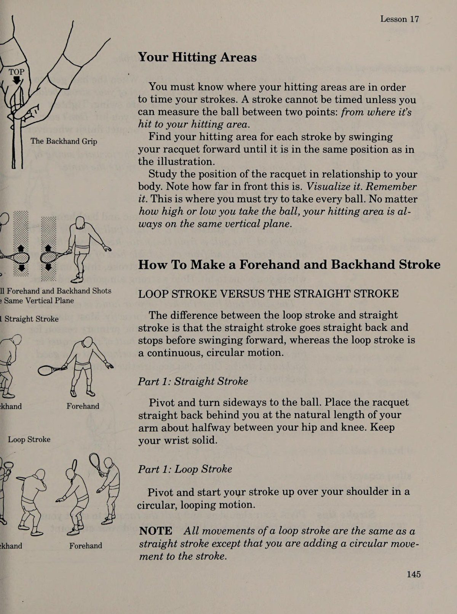
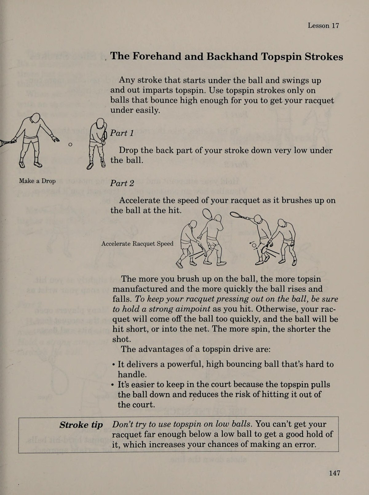
Bài 19 - 20: Kỹ Thuật Volley, Đờ-mi Volley & Khắc Phục Lỗi Bắt Lưới
Trên lưới, thời gian là kẻ thù lớn nhất của bạn. Victor Tantalo hướng dẫn cách biến cú volley thành một vũ khí đơn giản và hiệu quả nhất:
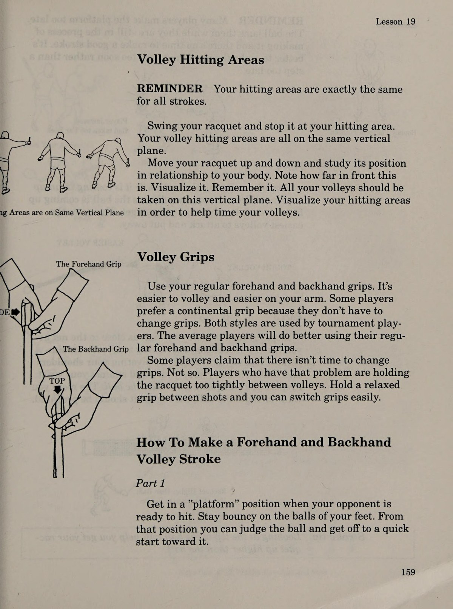
Cú Đấm Ngắn Mặt Vợt Mở Nhẹ
Cầm vợt kiểu Continental. Mặt vợt hơi ngửa nhẹ từ 5 đến 10 độ. Đẩy mặt vợt về phía trước như một cú đấm thẳng, tiếp xúc bóng phía trước mắt và kết thúc dứt khoát.
Triệt Tiêu Đà Lùi Rườm Rà
Lỗi phổ biến nhất khi bắt volley là kéo vợt ra sau vai. Hãy luôn giữ đầu vợt trong tầm nhìn ngoại vi của mắt. Tuyệt đối không để đầu vợt biến mất sau gáy bạn.
Kỹ Thuật Bắt Nửa Nảy (The Half-Volley)
Khi bóng rơi ngay dưới chân, hãy hạ thấp trọng tâm tối đa, giữ mặt vợt ổn định sát mặt đất và đón bóng ngay trong tích tắc bóng vừa bật lên khỏi mặt cỏ hoặc sân cứng.
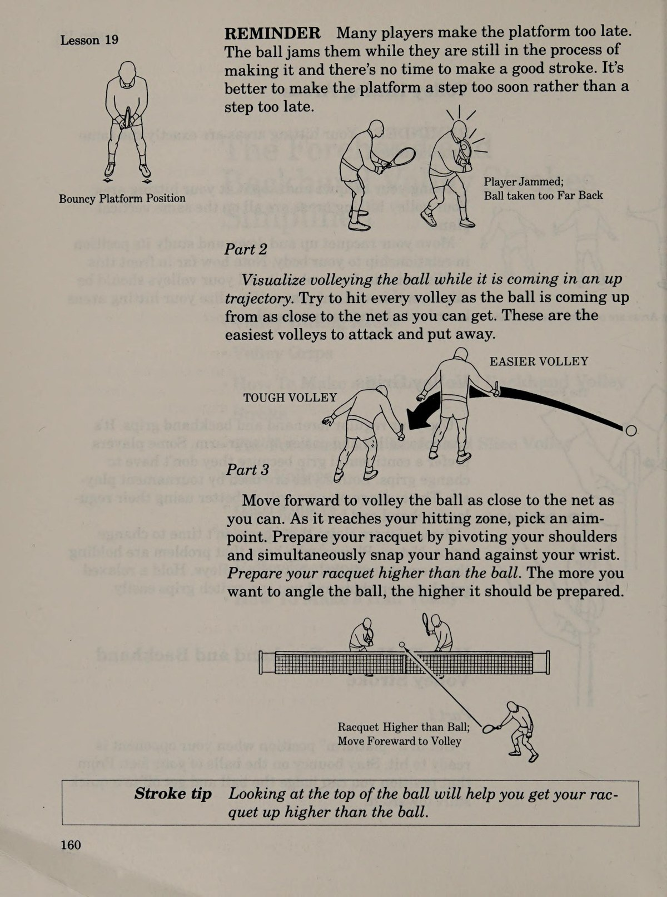
Bài 21 - 24: Kỹ Thuật Giao Bóng, Đập Bóng & Giải Quyết Điểm Mù
Cú giao bóng và đập bóng trên đầu (Overhead) chia sẻ cùng một chuỗi chuyển động ném bóng tự nhiên. Để tối ưu hóa sức mạnh và sự chuẩn xác:
- Điểm ngắm mục tiêu rõ ràng (Aimpoints): Đừng bao giờ giao bóng mà không xác định trước một điểm rơi cụ thể trong ô giao bóng. Sự thiếu hụt điểm ngắm là nguyên nhân số 1 gây ra các pha giao bóng rúc lưới hoặc ra ngoài.
- Tung bóng ổn định: Tung quả bóng bay lên thẳng đứng như được nâng bằng một chiếc cốc nước đầy mà không làm sánh một giọt nước nào ra ngoài. Tránh tung bóng xoay tròn làm rối loạn thị giác.
- Cú đập bóng trên đầu dứt khoát: Luôn dùng tay không thuận chỉ thẳng vào quả bóng trên không để định vị tọa độ, xoay nghiêng người lùi lại bằng bước trượt ngang và đập bóng ở điểm cao nhất có thể với tay vươn thẳng.
Bài 25: Phương Pháp Luyện Tập Khoa Học Với Máy Bắn Bóng & Bức Tường
Victor Tantalo đúc kết triết lý luyện tập đỉnh cao đã giúp ông từ một người mới chơi 50 tuổi trở thành một chuyên gia huấn luyện hàng đầu nước Mỹ:
- Tập luyện với mục đích rõ ràng (Purposeful Practice): Không bao giờ bước ra sân chỉ để đánh qua đánh lại vu vơ. Mỗi buổi tập phải nhắm vào một mục tiêu kỹ thuật cụ thể: ví dụ, tập 100 quả thuận tay chạm bóng trên mặt phẳng thẳng đứng hoặc 50 quả giao bóng thứ hai xoáy topspin an toàn.
- Bức tường tập là người thầy vĩ đại nhất: Bức tường không bao giờ biết mệt mỏi, không bao giờ phàn nàn và luôn trả lại quả bóng với tốc độ gấp đôi. Hãy vẽ một đường kẻ cao 1 mét trên tường làm mốc lưới và luyện nhịp "Bounce - Hit" liên tục 500 lần mỗi ngày.
- Khai thác máy bắn bóng thông minh: Đặt máy bắn bóng ở tốc độ vừa phải nhưng điều chỉnh điểm rơi biến hóa để rèn luyện bộ chân di chuyển và thói quen mở vợt sớm trước khi bóng nảy.